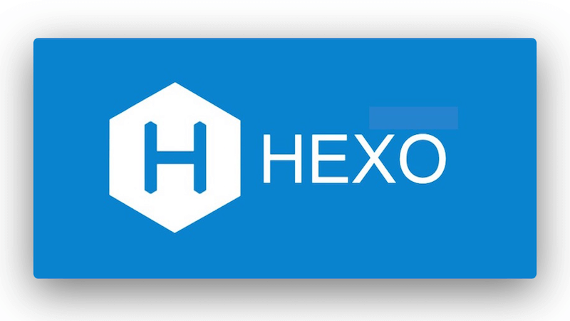

文章
9
标签
5
分类
4
主页
博文
分类
标签
归档
生活
分享
相册
音乐
书单
常用
友链
留言板
关于笔者
SereniusX的博客
搜索
主页
博文
分类
标签
归档
生活
分享
相册
音乐
书单
常用
友链
留言板
关于笔者
友情链接
🔗 友情链接
与我互链的优质资源
0
个链接
0
个分类
全部
官方文档
好朋友们
点头之交
官方文档

Hexo 文档
静态博客框架官方文档
博客框架
访问
Butterfly 主题
Hexo主题文档
主题美化
访问
好朋友们
Aurora
资深开发者的技术博客
技术分享
访问
点头之交
设计笔记
UI设计师的日常记录
设计
访问
申请友链
欢迎在下方留言板提交友链申请，请确保你的网站已添加本站链接：
我的站点信息
名称：
SereniusX的博客
网址：
https://sereniusx.github.io
描述：
记录技术学习与生活点滴
评论
SereniusX
文章
9
标签
5
分类
4
Follow Me
公告
本博客内容较杂，请按照需求合理检索取食
最新文章
操作系统实验及作业
2025-10-18
网络安全协议章节笔记
2025-10-17
科研资料整理收集工具
2025-10-16
CTF竞赛资料整理
2025-10-16
校园资料整理
2025-10-16
分类
CTF
1
其他
2
时事了解
1
计算机基础课程
3
标签
热点事件
其他资料
课程学习
社会观察
时事追踪
归档
十月 2025
9
网站信息
文章数目 :
9
本站访客数 :
本站总浏览量 :
最后更新时间 :
搜索
数据加载中